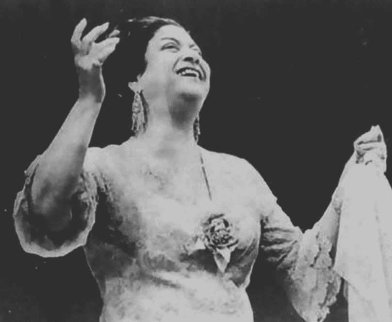

الشخصيات الفنية
بتمثل الفنانين والمبدعين اللي ساهموا في تشكيل ملامح التاريخ الفني، من رسامين ونحاتين وموسيقيين وممثلين، واللي أعمالهم لسه بتأثر وتلهم لحد النهارده.
الأحداث الفنية
هي المحطات الرئيسية اللي شكلت مسيرة الفنون عبر العصور، زي المعارض الكبرى، الحركات الفنية الجديدة، واللحظات اللي غيرت اتجاه الإبداع وفتحت مجالات جديدة للتعبير الفني.
الإنجازات
بتمثل الأعمال والابتكارات العظيمة اللي حققها الفنانون عبر التاريخ، واللي ساهمت في تطوير مجالات الفن المختلفة وخلّت ليها تأثير باقٍ لحد النهارده.
المعالم الفنية
هي المواقع والأماكن اللي ليها قيمة تاريخية وفنية، زي المتاحف، المعارض، والعمائر الفنية، واللي بتحكي قصة تطور الفن وبتخلينا نتعرف على حضارات وفنون الماضي.
بودكاست قريباً… استعد لسلسلة حلقات مميزة تغطي أحداث التاريخ بطريقة مختلفة!